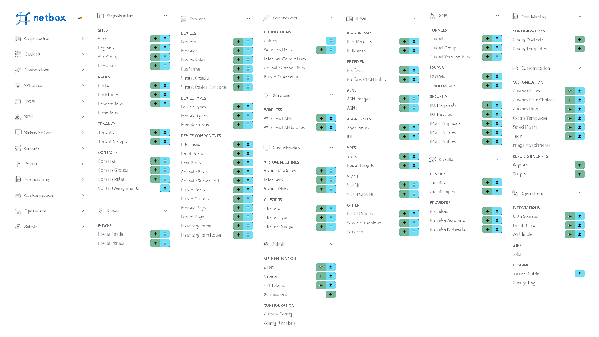

NetBox — это программное обеспечение, которое предназначено для моделирования ресурсов инфраструктуры, автоматизации сетей и проектирования инфраструктуры. Почему я выбрал именно NetBox? 1 - Это прекрасное програмное решение для моделирования и документирования современных сетей. В нём можно объеденить традиционные дисциплины по управлению IP-адресами, инфраструктурой центра обработки данных с мощными API и расширениями. 2 - Он предоставляет широкий ассортимент типов объектов, тщательно разработанных для удовлетворения потребностей при проектирования инфраструктуры. Они охватывают все аспекты сетевых технологий, от управления IP-адресами до прокладки кабелей, наложений и многого другого. 3 - Пользователям можно расширить данное приложение в соответствии со своими потребностями с приложением минимальных усилий по разработке. 4 - С помощью NetBox можно задокументировать каждый компонент физической инфраструктуры. Он предоставляет полную картину активов и того, как они соединяются друг с другом. Эта карта идеального состояния сети, которая формирует основу для широкого спектра автоматизированных задач, таких как проверка конфигурации, мониторинг и многое другое. 5 - NetBox не только отображает физические компоненты сети, но и документирует IP-адреса и их диапазоны для того, чтобы идеально задокументировать подключения устройств в вашей инфраструктуре. NetBox можно использовать в качестве источника данных для управления IP-адресами, стандартными платформами сетевой автоматизации, такими как Ansible и Terraform. В NetBox реализован следующий заполняемый функционал:
